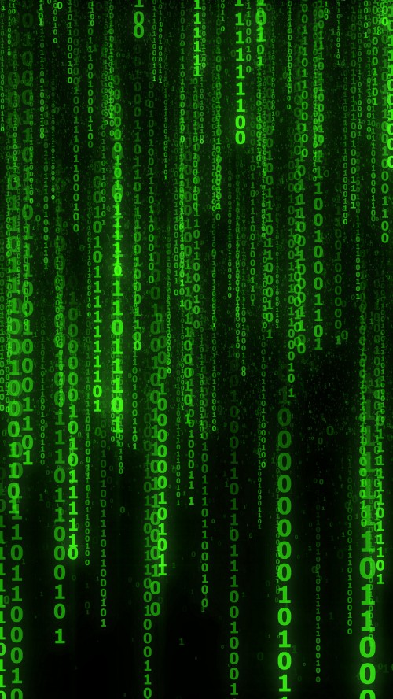

Cracker
Cracker

Bienvenido a mi segundo proyecto de Lenguaje de Marcas del curso 1ºDAW, esta vez será HTML y CSS en conjunto con opción a meter todo lo que queramos de CSS,
para este trimestre he pensado en hacer una página enfocada al hacking ético, ya que es algo que me llama mucho la atención y me gustaría estudiarlo :)
Hay unas cuantas cosas de CSS en este proyecto que no hemos dado en clase así que trataré de explicarlo en el código (disponible en GitHub).
La página trata sobre el hacking, tanto con fines maliciosos como éticos, hablaré sobre cómo se originó, cómo evolucionó, los sistemas operativos más utilizados, cómo es a día de hoy...
Ya que es un mundo muy amplio con varias cosas interesantes y muchas historias que pueden parecer increíbles pero son totalmente ciertas.
El objetivo con esto es poder hacer un proyecto en el que descubra cosas nuevas que se pueden hacer con CSS y quedarme la página para ir modificándola
con el paso del tiempo, me gustaría mejorarla con todo lo que sigamos aprendiendo y mantenerla actualizada, para que más gente a la que le interese
este mundo sepa qué sistema usar y conocer un poco más este mundo tan amplio y sin límites :)
La primera novedad viene ya implementada en el menú para hacerlo más atractivo visualmente.
Si estás en cualquier página que no sea el inicio y deseas retroceder a ella, solo tienes que pulsar la foto del inicio